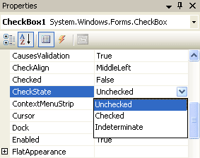

The Checkbox Code
This lessons follows on from the previous page
If you click on any one of your Checkboxes and examine its Properties in the Property box, you'll notice that it has a CheckState Property. Click the down arrow to see the options this CheckState has.

As you can see, you are given three options: Unchecked, Checked, Indeterminate.
If a checkbox has been selected, the value for the CheckState property will be 1; if it hasn't been selected, the value is zero. (The value for the Indeterminate option is also zero, but we won't be using this.)
We're only going to test for 0 or 1, Checked or Unchecked. You can do the testing with a simple If Statement. Like this:
If CheckBox1.CheckState = 1 Then
MsgBox("Checked")
End If
After you type the equal sign, though, VB will give you a drop down box of the values you can choose from. So the above code is the same as this:
If CheckBox1.CheckState = CheckState.Checked Then
MsgBox("Checked")
End If
Whichever you choose, the Statement will be True if the checkbox is ticked and False if it isn't.
Add a Button to your Form and put that code behind it (either of the two, or test both). When you've finished typing the code, run your programme. Put a tick inside Checkbox1, and click your button. You should get a Message Box popping up.
Amend your code to this:
If CheckBox1.CheckState = CheckState.Checked Then
MsgBox("Checked")
Else
MsgBox("Not Checked")
End If
An alternative to Else is ElseIf. It works like this:
If CheckBox1. CheckState = 1 Then
MsgBox "Checked"
ElseIf Checkbox1. CheckState = 0 Then
MsgBox "Unchecked"
End If
When using the ElseIf clause, you need to put what you are testing for on the same line, just after ElseIf. You put the word Then right at the end of the line. You can have as many ElseIf clauses as you want. In other words, it's exactly the same as the first "If" line only with the word "Else" in front "If".
No more reading these lessons online - get the eBook here!
Add 4 more If Statements to check for the values in your other Checkboxes :
Checkbox2.CheckState, Checkbox3.CheckState, etc.
We're now going to get rid of the Message Boxes inside the If Statements. So either comment out all your MsgBox lines, or delete them altogether.
Instead, we'll build up a String Variable. So add a String Variable to the code for your button, and call it message.
The message variable needs to go inside the If Statement. If the user has checked a Box (If its CheckState property is 1), then we build the message. We need to remember what is inside the message variable, so we can just use this:
message = message & Checkbox1.Text & vbNewLine
That way, every time an option is Checked, Visual Basic will keep what is in the variable called message and add to it whatever the text is for the Checkbox.
So add that line to your If Statements. Something like this
If Checkbox1.CheckState = 1 Then
message = message & Checkbox1.Text & vbNewLine
End If
If Checkbox2.CheckState = 1 Then
message = message & Checkbox2.Text & vbNewLine
End If
And at the end of your If Statements, on a new line, add this:
MsgBox "You have chosen " & vbNewLine & message
Here, we're building a text message for out Message Box. We're saying our Message Box is to contain the text "You have chosen " And a New Line And whatever is inside the variable called message.
When you've finished, Run your Programme to test it out. Put a tick inside all of your Checkboxes. When you click your button all your Soap Operas should appear in the Message Box. Check and Uncheck some options, and click the button again. Only those items that are selected should appear in your Checkbox.
So, we can test to see which Check Boxes a user has ticked, and we can keep a record of those choices for ourselves.
What we can also do is count how many Check Boxes were ticked. We can then use a Select Case Statement to display a suitable message.
Keeping a count is straightforward. First we set up an integer variable called counter, and set it's value to zero.
Dim counter As Integer = 0
Then we can just keep adding one to whatever is in this counter variable. In other words, every time a Checkbox has a value of 1 (is ticked), we can add one to our counter (increment our variable).
We can add this straight into our If Statement, on a new line after the message code.
counter = counter + 1
So your code would be this:
If Checkbox1.CheckState = 1 Then
message = message & Checkbox1.Text & vbNewLine
counter = counter + 1
End If
To test that your counter is working, you can add a second message box to the end of the code, just below your first message box:
MsgBox("Counter = " & counter)
Or adapt your first message box:
MsgBox("You have chosen " & counter & " soaps")
Now that we have a way to count how many Checkboxes are ticked, we can add a Select Case Statement.
Exercise I
Add a Select Case Statement to the end of your code to test whatever is inside the variable called counter.
Remember what the format is for a Select Case? It's this:
Select Case VariableName
Case 0
MsgBox "You obviously don't watch soaps!"
End Select
If you have 5 Check Boxes on your Form, then the maximum value that counter will hold is 5. So you only need to go up to Case 5.
Add suitable messages for each Case that you're testing for.
This has been quite a long lesson, so give yourself a big pat on theback if you got through it! In the next part, we'll see how to add Option Buttons to a VB .NET form.